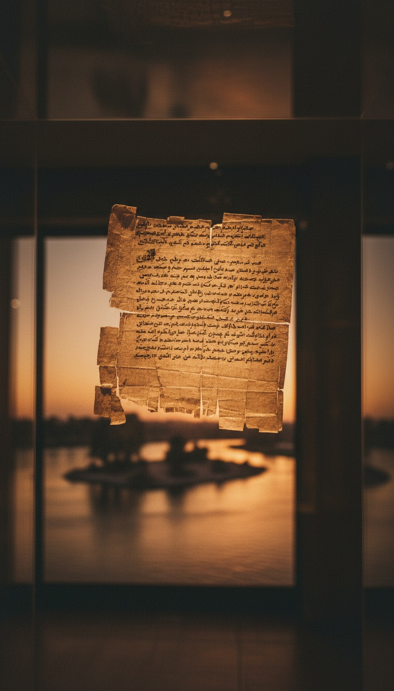

A Jewish temple to Yahweh stood on Elephantine Island in the Nile at Aswan, Egypt, for more than a century, and the Hebrew Bible never names it. The Judean soldiers who worshipped there left their own records. These are Aramaic papyri now held in Berlin and at the Brooklyn Museum. Among them are a Passover letter from 419 BC and a 407 BC petition begging the Persian governor of Judah to rebuild the temple after it was burned.
Jerusalem knew this temple existed. The garrison wrote to the high priest in Jerusalem by name. He never answered, and the books that became Scripture closed without one line about the house of Yahu on the Nile.

The Garrison at the Edge of Egypt
Elephantine sits at the First Cataract, the granite rapids that marked Egypt's southern frontier. The Judeans called it Yeb. A garrison of Jewish soldiers held the fortress there for the Achaemenid kings of Persia. Their dated contracts, loans and letters run from about 495 BC to the end of the fifth century.
The temple is older than the documents. In their own petition, the garrison states that their fathers built it before Cambyses invaded Egypt in 525 BC. Cambyses tore down the temples of the Egyptian gods and left the house of Yahu untouched. That puts the Elephantine temple in service before the rebuilt temple in Jerusalem was dedicated around 515 BC.
Sit with that. For a stretch of years, the working Jewish temple, with priests, an altar and a calendar, stood on an island in Egypt. Jerusalem's was still a building site.
Yahu's House Beside the Ram God
The garrison built its temple wall to wall with the precinct of Khnum, the ram-headed creator god of the cataract. The 407 BC petition describes it in detail. It had five gateways of hewn stone, stone pillars, a roof of cedar wood, doors hung on bronze hinges, and basins of gold and silver for the rites.
The priests there offered meal offerings, incense and burnt offerings. Deuteronomy 12 commands that sacrifice happen only at the one place God chooses. The Elephantine priests sacrificed on the Nile anyway, in the open, for generations.
Their worship carried more than one divine name. A donation list from the archive records contributors giving two shekels each for YHW, and the same fund set money aside for Eshem-Bethel and Anat-Bethel. A court oath in the papyri invokes Anat-Yahu. Jeremiah 44 rages at the Jews of Pathros, in Upper Egypt, for burning incense to the Queen of Heaven. The papyri hand you the goddess he was shouting about.
The Passover Letter of 419 BC
In 419 BC, the fifth year of Darius II, a man named Hananiah wrote to Jedaniah and the Jewish garrison of Elephantine. He reported that the king had sent word to Arsames, the satrap of Egypt. The letter then set out the festival of unleavened bread: the fifteenth to the twenty-first of Nisan, keep clean, do no work, bring no leaven into the houses.
That one sheet holds three receipts. A named sender. A named Persian king. A dated instruction for a Jewish holy week, routed through the satrap of Egypt. The papyrus surfaced in 1907 during the German excavations on the island. It is held today in the Egyptian Museum and Papyrus Collection in Berlin.
A Persian chain of command carried the rules of Passover to Jews in Egypt. Scripture tells the Exodus out of Egypt in great detail. It stays silent about the Passover kept inside Egypt under a Persian seal.
Every name around the Elephantine temple made it into the Bible. The temple itself was cut.
Burned in 410 BC, Petitioned in 407 BC
In the summer of 410 BC, while Arsames was away at the Persian court, the priests of Khnum paid off the local commander, Vidranga. His troops smashed the stone pillars, burned the gates and the cedar roof, and carried off the gold and silver vessels.
The garrison fasted in sackcloth. Their wives lived like widows. They prayed against Vidranga, and the petition records the answer. The dogs tore the fetters from his feet, and every man who sought evil against the temple was killed.
Then, in late 407 BC, they wrote to Bagohi, the Persian governor of Judah, and asked him to order the temple rebuilt. Two drafts of that petition survive in Berlin. The answer survives too. It is a memorandum from Bagohi and Delaiah authorizing the rebuild "as it was formerly," with meal offering and incense. The burnt offering is gone from the text. Somebody negotiated the blood out of Yahu's altar on the Nile.
The Bible Kept the Names and Cut the Temple
The petition says the garrison first wrote to Johanan, the high priest in Jerusalem, and to the nobles of Judah. Three years passed with no reply. Johanan appears in Nehemiah 12:22. Jerusalem held the letter and chose silence.
They also wrote to Delaiah and Shelemiah, sons of Sanballat, governor of Samaria. Nehemiah casts Sanballat as the great enemy of the Jerusalem wall. The Jews of Elephantine treated his family as allies. Bagohi resurfaces in Josephus as Bagoses, governor of Judea. Every power broker around this temple left a footprint in the record Jerusalem kept.
The obvious push-back is that the editors in Jerusalem never heard of a distant garrison temple. The petition breaks that cold. The high priest of Jerusalem received a direct written appeal from this temple's own priests and let it sit. Ignorance leaves no letters. A letter received and left unanswered is a decision.
Isaiah 19:19 promises an altar to the LORD in the midst of the land of Egypt, as a thing still to come. At Aswan, that altar was already burning offerings. The prophecy kept the shape. The editors stripped the address.
| Detail | The Elephantine papyri | The Hebrew Bible |
|---|---|---|
| Jewish temple in Egypt | Standing before 525 BC, rebuild requested in 407 BC | Never named |
| Passover in Egypt | Dated 419 BC letter routed through the Persian satrap | Never recorded |
| Johanan the high priest | Received the garrison's appeal and sent no reply | Listed in Nehemiah 12:22, appeal absent |
| Sanballat's family | Asked for help as allies | Cast as enemies in Nehemiah |
| Worship of Anat | Anat-Yahu in an oath, Anat-Bethel on the donation list | Condemned in Jeremiah 44 as the Queen of Heaven |
Older Than Every Surviving Bible
The oldest Hebrew Bible manuscripts are fragments among the Dead Sea Scrolls, copied around 250 BC and later. The complete codices came far later: the Aleppo Codex around AD 930 and the Leningrad Codex in AD 1008.
The Elephantine papyri are dated by regnal year to 419, 410 and 407 BC. They are original letters, written by the people who lived the events, more than a century and a half before the oldest surviving scroll was copied. Where the papyri and the later scrolls disagree about fifth-century Jewish worship, the papyri were there.
That is the pattern behind every text in our Lost Books collection. The first-hand record survives in the sand, and the curated record survives in the canon. For how that curation worked book by book, the Canon breaks it down.
Elephantine was the first. Around 170 BC, the priest Onias IV built another Jewish temple in Egypt at Leontopolis, in the Heliopolis district. It ran sacrifices until Rome shut it down in AD 73 on the orders of Vespasian. That makes two temples to the God of Israel on Egyptian soil, spanning five centuries, and the Hebrew Bible names neither one.
The papyri show the cut was deliberate. Jerusalem had the letter, the names and the dates. So ask the question the scribes never wanted asked. If two temples could vanish from Scripture, how many prophets, how many books, and how many gods went with them?
Frequently Asked
Was there a Jewish temple in Egypt?
Yes. Judean soldiers ran a temple to Yahweh on Elephantine Island at Aswan from before 525 BC. A second Jewish temple later stood at Leontopolis from about 170 BC to AD 73.
What are the Elephantine papyri?
They are Aramaic letters, contracts and petitions written by the Jewish garrison at Elephantine in the fifth century BC. Major groups are held in the Egyptian Museum and Papyrus Collection in Berlin and at the Brooklyn Museum in New York.
Does the Bible mention the Elephantine temple?
It never names it. The Bible keeps the people around it, including the high priest Johanan, Sanballat's family and the Jews of Pathros, and drops the temple itself.
Why was the Elephantine temple left out of the Bible?
Deuteronomy demands one altar in one chosen place, and a working temple in Egypt broke that rule in public. Jerusalem's high priest received the garrison's appeal and never answered, and the scribes who shaped the canon kept that silence.
Are the Elephantine papyri older than the Bible?
They are older than every surviving Hebrew Bible manuscript by more than 150 years. The earliest Dead Sea Scroll copies date to about 250 BC.
Before you go
7 books the Vatican doesn't want you reading. Free PDF. The texts they cut, with sources. Joined by 300+ Inner Circle members.
No spam. Unsubscribe anytime.
Go deeper
The Hidden Canon, Vol. I: Enoch. Jubilees. Thomas. Mary. Judas. 90 pages, 14 chapters, every receipt cited. The books your Bible quietly removed.
Read the Canon →